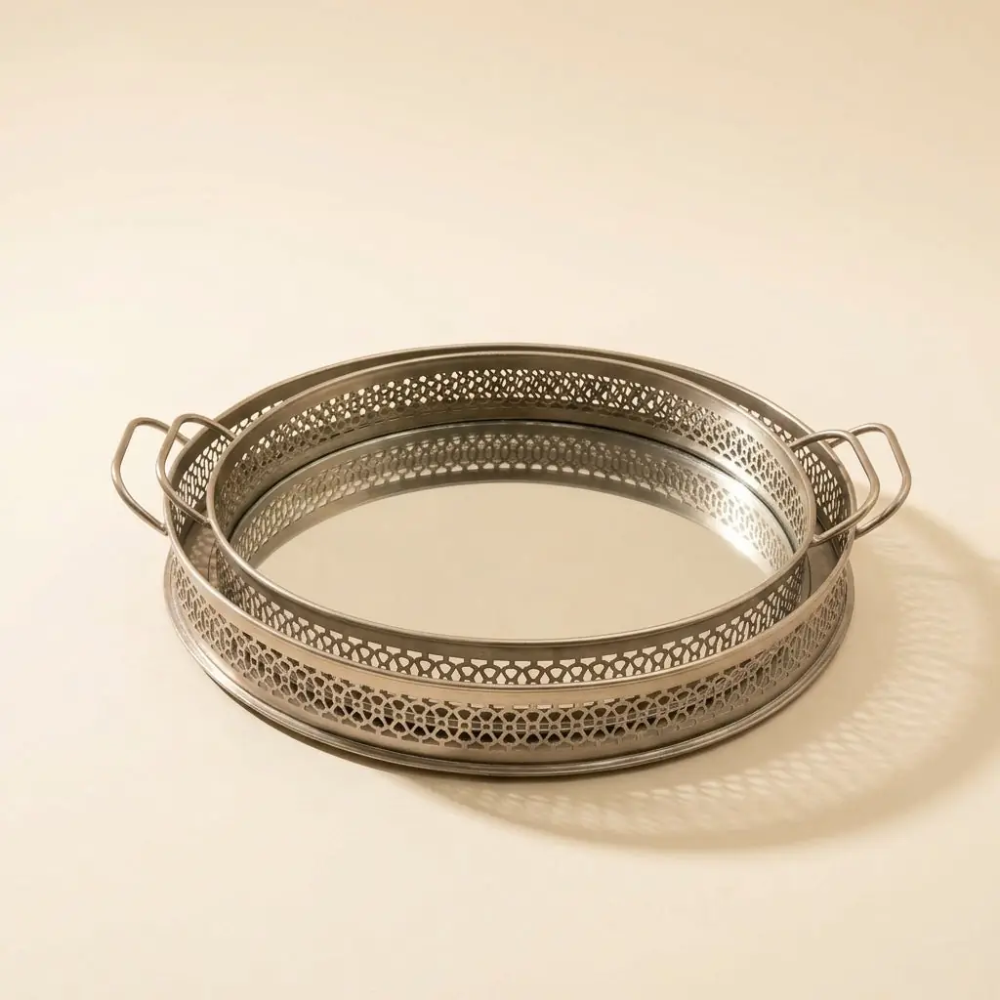
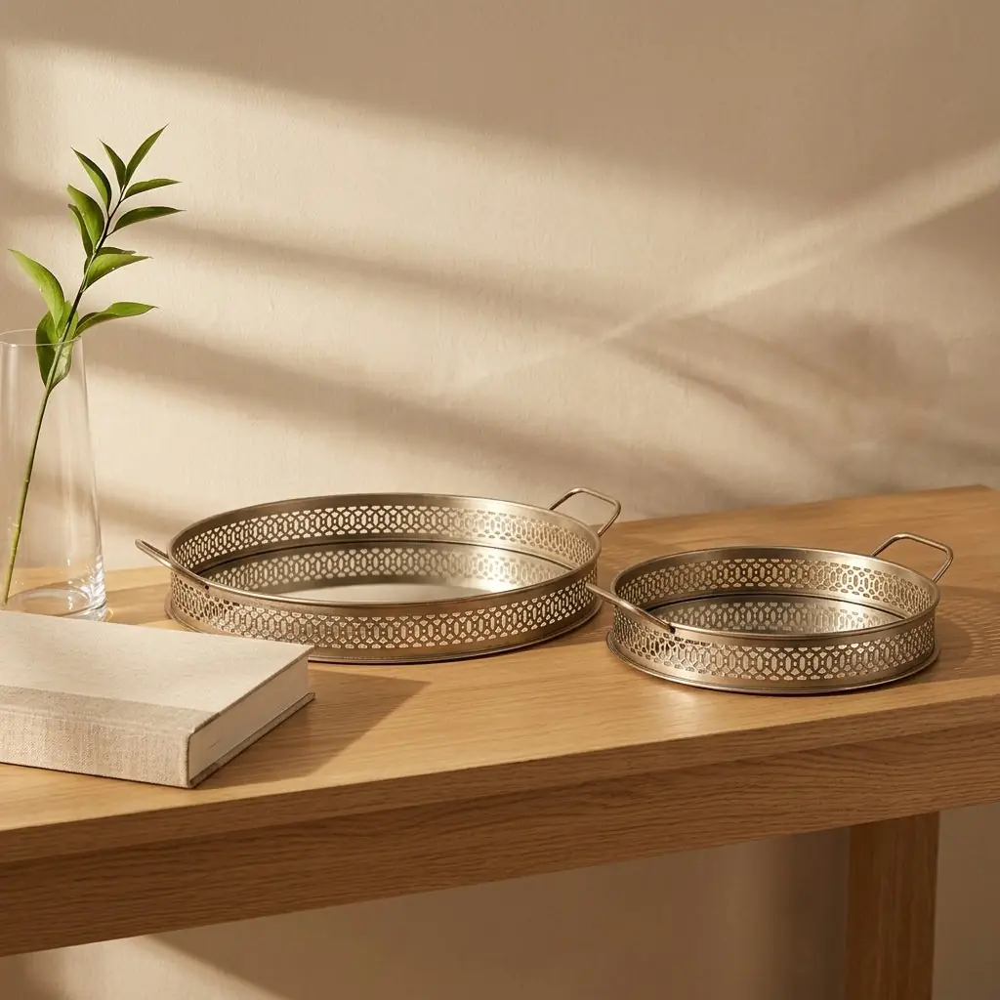
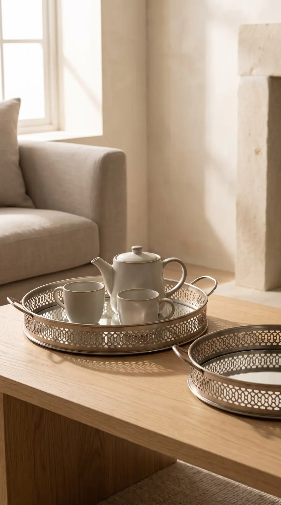
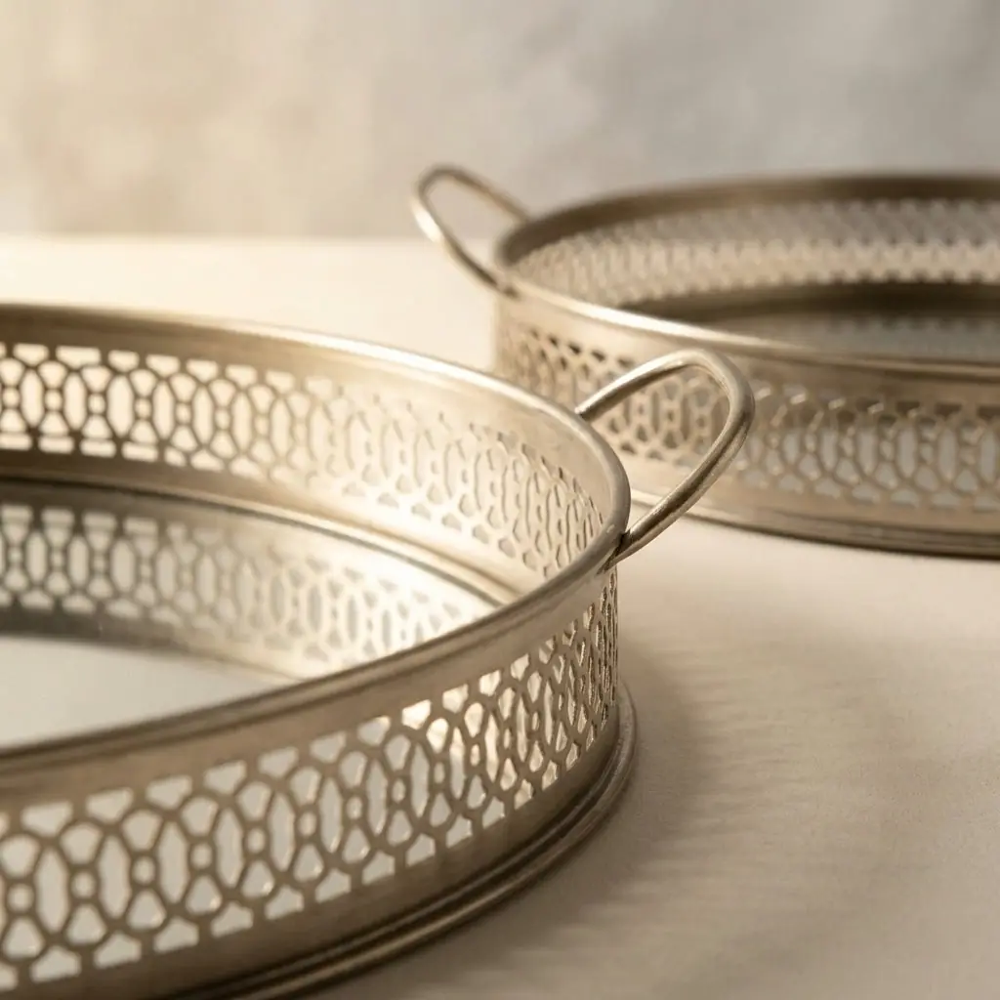
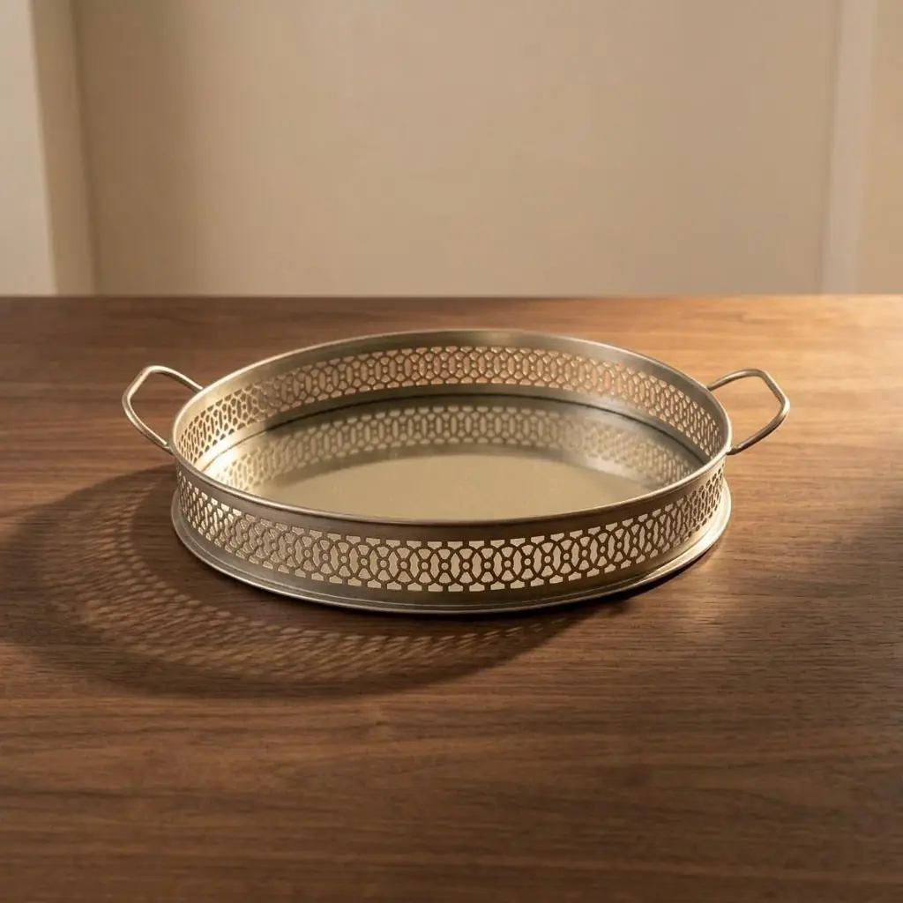
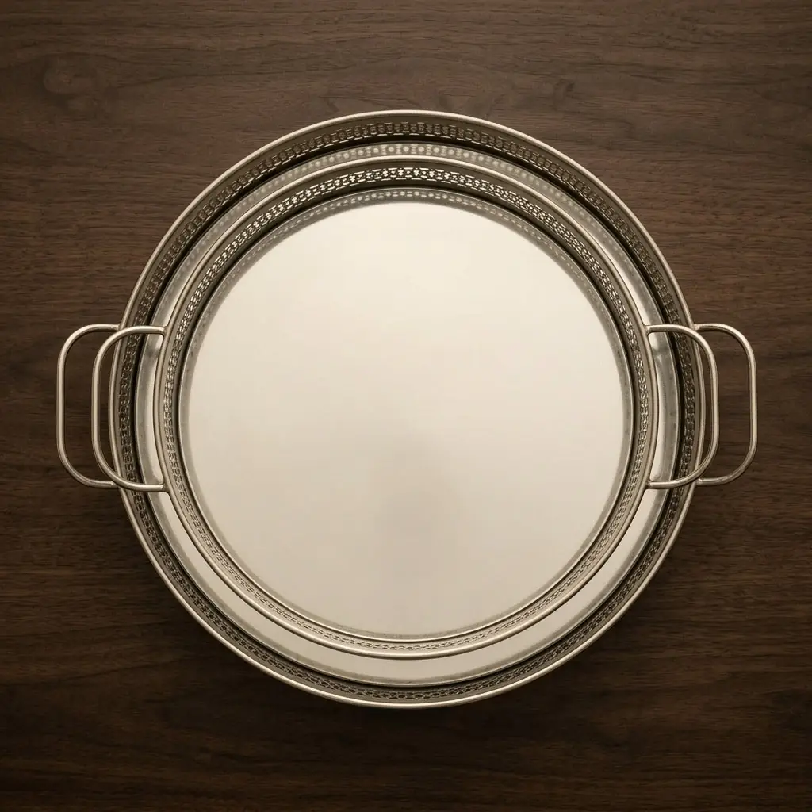
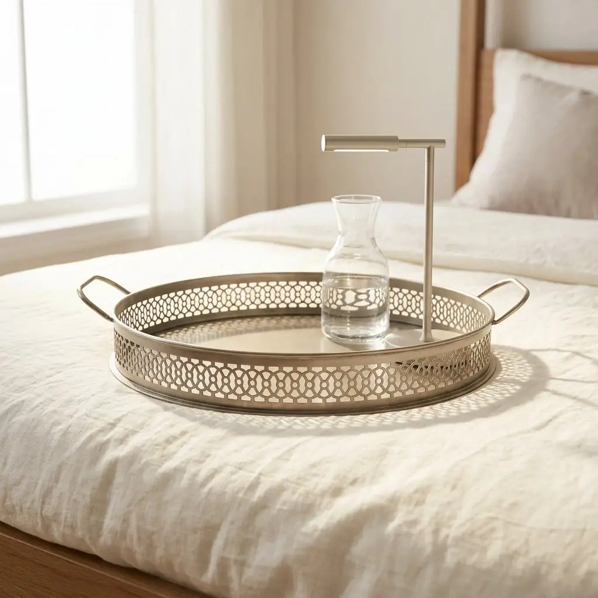
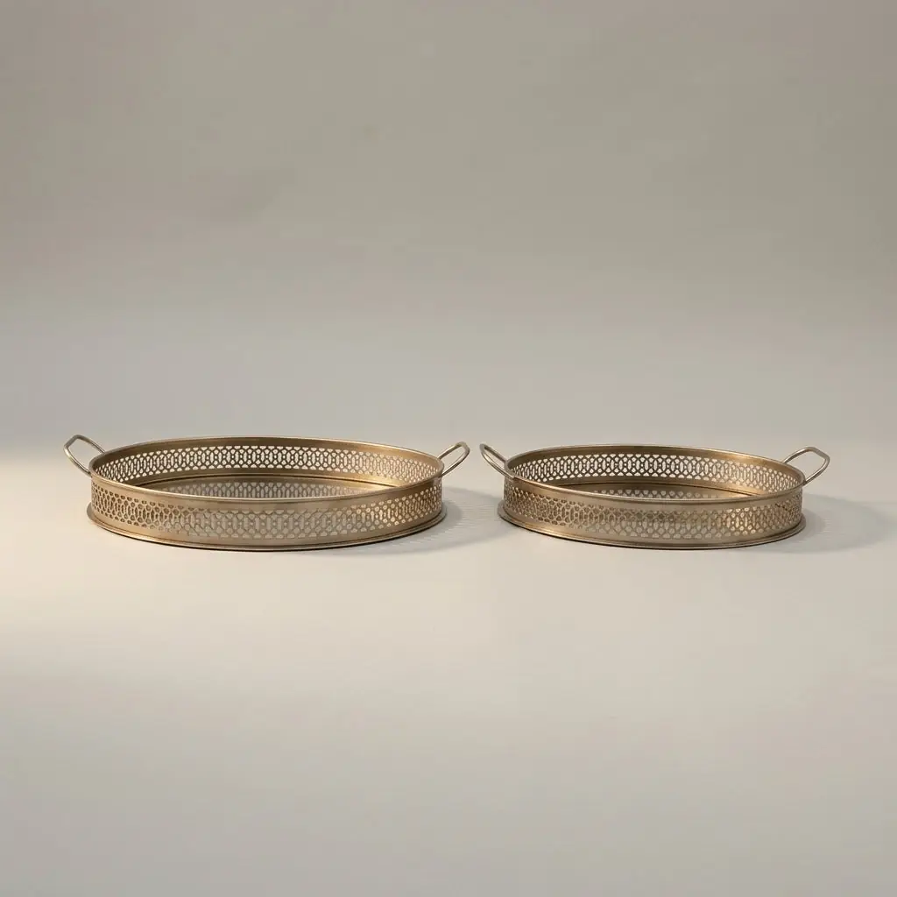
Two handcrafted iron trays for serving
₹2,370
I am a set of two iron trays finished in a soft antique nickel tone with hand-cut perforated borders. I am made to serve tea or display candles, but please keep me away from water.
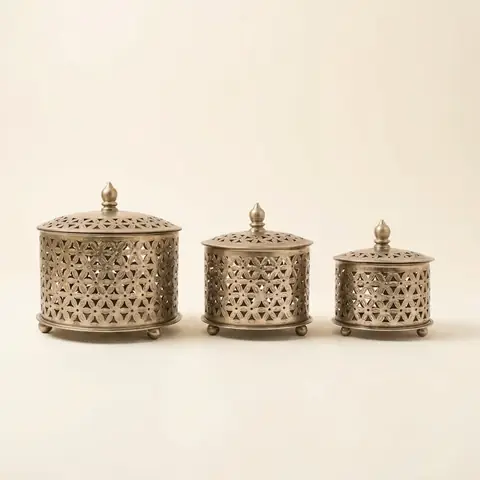
Cut-work Iron Boxes, set of 3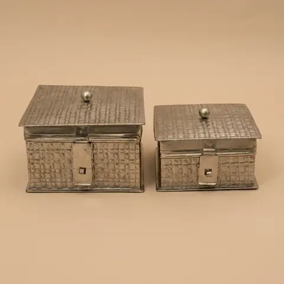
Hammered Iron Boxes, set of 2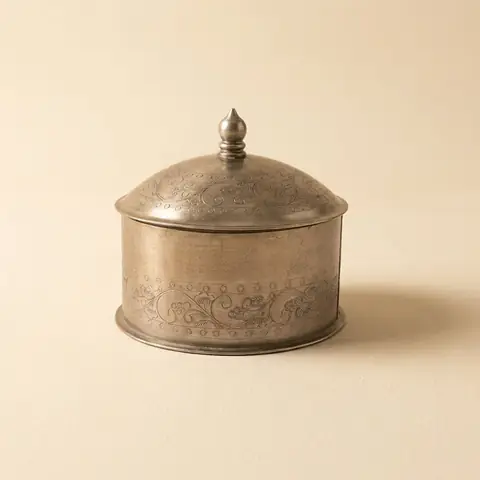
Domed Iron Boxes, set of 2Wipe gently with a soft, dry cloth.
India only. Leaves Jodhpur in 3–7 business days. 7-day returns; report any damage within 48 hours.
Photos marked Concept image are AI-generated from the real product photos and checked for accuracy. Handmade, so each piece varies slightly.
Open in swipe view